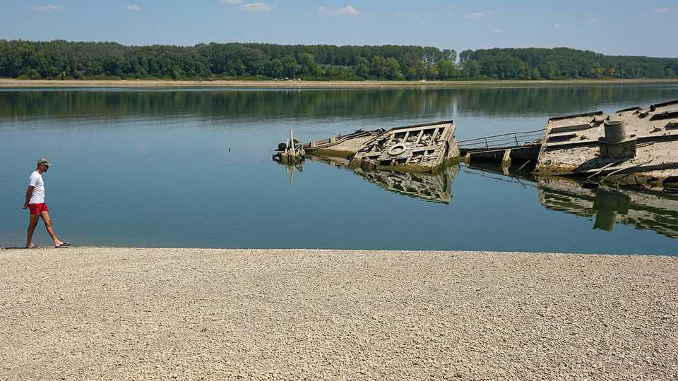
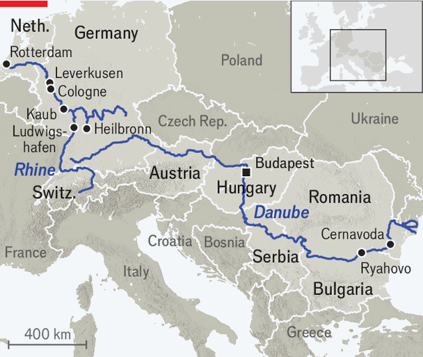

Europe’s dry rivers are exposing mammoths and Nazi warships
Record heat and drought are crippling

Aug 13th 2026
Western Europe is facing its fifth heatwave this year, and the waters of the Rhine and Danube rivers are the lowest since official records began in 1880. The gauge in Kaub, a medieval town in Rhineland-Palatinate, serves as the benchmark for the 1,230km-long river because it is near the Middle Rhine’s shallowest section. On August 12th it showed a maximum depth of 12cm. The previous record, during a drought in 2018, was 25cm. It could fall to single digits in the next few days, according to Germany’s association of inland shipping. That would cut the navigable Rhine in two.
The Danube, the second-longest river in Europe (after Russia’s Volga), is hardly doing better. A gauge in Budapest shows 26cm, well below the previous record low of 33cm in 2018. That threatens the electricity supply. Paks, a nuclear plant near Budapest that produces 30% of Hungary’s electricity, and Cernavoda, Romania’s state-owned nuclear plant, have been partly or completely switched off: they use the Danube’s water for cooling. Both countries’ governments have asked industry and households to cut back electricity use as much as possible. Car companies such as Audi in Hungary and Dacia in Romania have scaled back production.

Along both rivers the low waters have exposed “hunger stones”, river boulders carved between the 15th and 19th centuries to mark low water levels and warn of crop failures and famine. In Budapest they laid bare a Wehrmacht motorcycle from the second world war. Near the village of Ryahovo in Bulgaria, the remains of a mammoth became visible. In the Serbian stretch of the Danube a fleet of Nazi-era warships were revealed, among some 200 the Germans scuttled in September 1944 to stop Soviet troops from using the river.
The rivers play a big economic role. The Rhine accounts for roughly two-thirds of the European Union’s inland-waterway freight traffic by volume, and over 99% of its waterborne container transport. The Danube carries around 8% of EU freight traffic by volume. To avoid running aground, barges are transporting just 15-20% of normal loads, driving up transport costs. “A barge with rock salt from Heilbronn usually carries 2,200 tonnes, but at the moment they arrive with 280 tonnes,” says Christian Lorenz of Häfen und Güterverkehr Köln, a logistics firm in Cologne. That is still ten times what a lorry can handle, so companies continue to use them.
The Rhine is especially crucial for Germany, Europe’s biggest economy. Some 600 vessels cross the German-Dutch border every day, many carrying goods to be exported from Rotterdam, Europe’s biggest port. Bulk goods such as coal, steel, crude oil, chemicals and minerals are cheaper (and greener) to transport by barge than by lorry or train. Factory clusters were built along the Rhine in the 19th century to access barge transport and water for industrial processes, and they have remained there ever since, says Carsten Brzeski of iNG, a Dutch bank. Bayer, a German pharma giant, is headquartered in Leverkusen, on the eastern bank of the Rhine. BASF, the world’s largest maker of chemicals, is in Ludwigshafen am Rhein, a bit south on its namesake river.
Over the past decade businesses have started to adapt to recurrent low-water crises, holding bigger inventories and using ships built for shallower rivers. Many have switched from river to road or rail. In 2017 4.7% of all goods in Germany were transported by inland waterways; in 2024 that had fallen to 4.1%. But the drought has largely halted the thriving cruise-ship industry on both rivers. Farmers are worried about their harvests, and fishermen fear for their livelihoods.
How big will the economic hit be? The dry spell in 2018 reduced Germany’s GDP by around 0.4% according to the Kiel Institute for the World Economy, a think-tank. This year’s water levels have been lower, so the damage may be worse. Mr Brzeski reckons that if they persist until October, that could shave 0.5% off German GDP. But as with the rest of central Europe, it is too early to quantify the impact. Europe’s record-breaking drought is still in full swing. ■